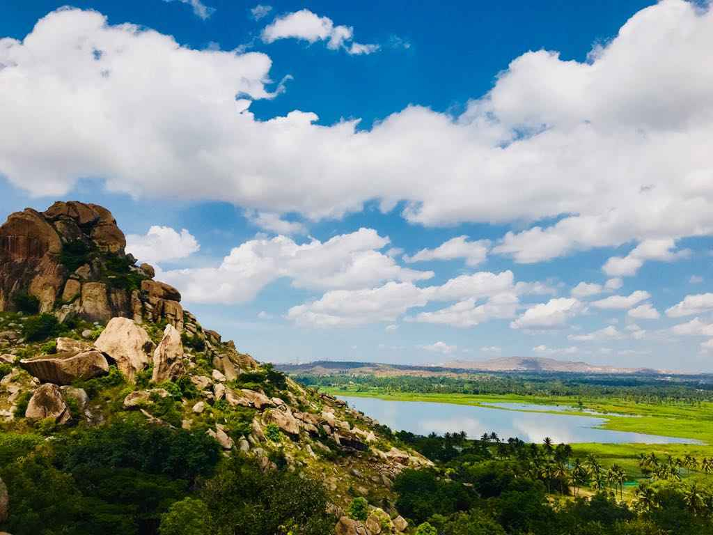
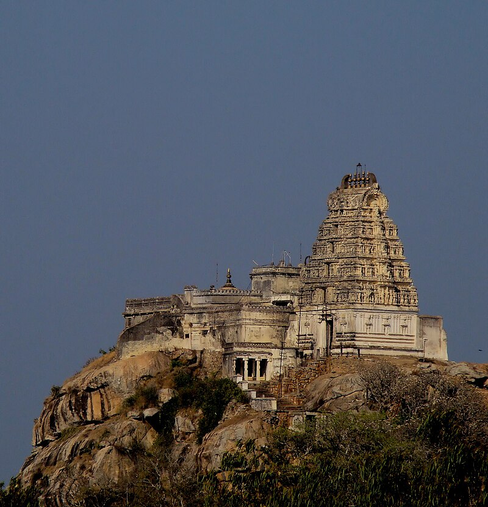

1 / 3

The Taj Mahal is an ivory-white marble mausoleum on the right bank of the river Yamuna in Agra, Uttar Pradesh, India.
2 / 3

After Indian Independence, these rocky hills called as "Kunti Betta" by locals in Pandavapura ,Mandya district ,Karnataka
3 / 3

Melukote in Pandavapura taluk of Mandya district, Karnataka, in southern India, is one of the sacred places in Karnataka.It is built on rocky hills, known as Yadugiri